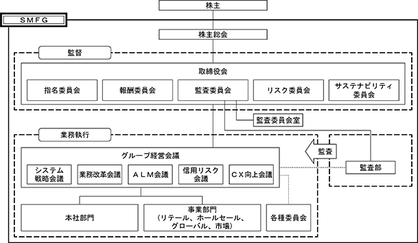
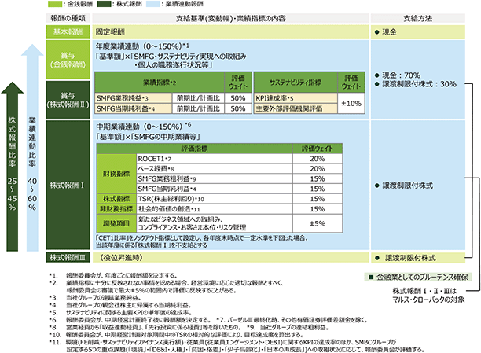
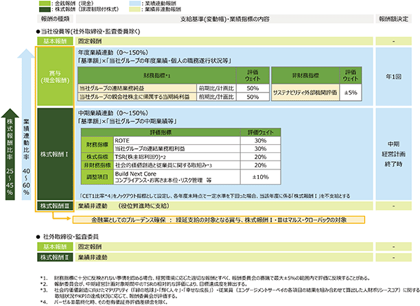
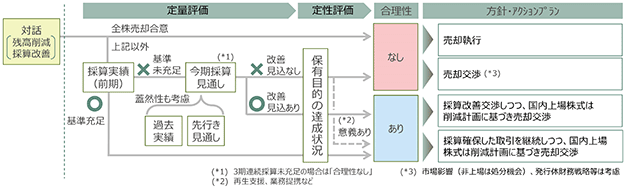
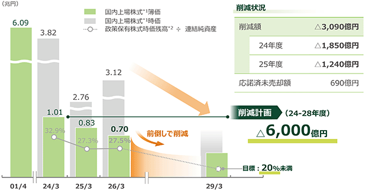

① コーポレート・ガバナンスに関する基本的な考え方
当社グループでは、「経営理念」を当社グループの経営における普遍的な考え方として定め、企業活動を行う上での拠りどころと位置付けております。そして、経営理念に掲げる考え方を実現するために、コーポレート・ガバナンスの強化・充実を経営上の最優先課題の一つとし、実効性の向上に取り組んでおります。
併せて、中長期的に目指す姿として「ビジョン」、すべての役職員が共有すべき価値観として「Ｆｉｖｅ Ｖａｌｕｅｓ」を定め、当社グループの理念体系として当社グループの全役職員に対し、周知・浸透を図っております。
＜経営理念＞
○お客さまに、より一層価値あるサービスを提供し、お客さまと共に発展する。
○事業の発展を通じて、株主価値の永続的な増大を図る。
○勤勉で意欲的な社員が、思う存分にその能力を発揮できる職場を作る。
○社会課題の解決を通じ、持続可能な社会の実現に貢献する。
＜ビジョン＞
世界をつなぐ日本発のトラステッド・パートナー
＜Ｆｉｖｅ Ｖａｌｕｅｓ＞
○Ｉｎｔｅｇｒｉｔｙ
プロフェッショナルとして高い倫理観を持ち誠実に行動する。
○Ｃｕｓｔｏｍｅｒ Ｆｉｒｓｔ
お客さま起点で考え、一人ひとりのニーズに合った価値を提供する。
○Ｐｒｏａｃｔｉｖｅ ＆ Ｉｎｎｏｖａｔｉｖｅ
先進性と独創性を尊び、失敗を恐れず挑戦する。
○Ｓｐｅｅｄ ＆ Ｑｕａｌｉｔｙ
迅速かつ質の高い意思決定と業務遂行により、競合との差別化を図る。
○Ｔｅａｍ “ＳＭＢＣ Ｇｒｏｕｐ”
多様性に富んだ組織の下で互いを尊重し、グループの知恵と能力を結集する。
なお、当社は、コーポレート・ガバナンスに関する当社グループ役職員の行動指針として「ＳＭＦＧコーポレートガバナンス・ガイドライン」を制定し、公表しております。同ガイドラインに基づき、実効的なコーポレート・ガバナンスを実現することで、不祥事や企業としての不健全な事態の発生を防止しつつ、持続的な成長と中長期的な企業価値の向上を図ってまいります。
② コーポレート・ガバナンス体制
(現行の体制を採用する理由)
当社は、国際的に広く認知されたコーポレート・ガバナンス体制を構築し、業務執行に対する取締役会の監督機能の強化及び業務執行の迅速化を図るため、2017年６月より、機関形態として、指名委員会等設置会社を採用しております。専門知識や経験等のバックグラウンドが異なる多様な社外取締役の選任や、取締役会の機能が効果的かつ効率的に発揮できる適切な員数の維持等を継続するとともに、指名委員会等設置会社の特長を活かすことで、コーポレート・ガバナンスの一層の向上を目指してまいります。
＜当社のコーポレート・ガバナンス体制(本有価証券報告書提出日現在)＞

(取締役会)
イ．取締役会の役割、構成
取締役会は、経営の基本方針等、法令上取締役会の専決事項として定められた事項の決定、並びに、執行役及び取締役の職務の執行の監督を主な役割としております。取締役会は、取締役会の監督機能の一段の強化及び業務執行の迅速化等を目的として、法令上取締役会の専決事項として定められている事項以外の業務執行の決定を、原則として執行役に委任しております。
本有価証券報告書提出日現在、取締役会の議長には、業務執行を行わない取締役会長が就任しているほか、13名の取締役のうち10名が当社または子会社の業務執行を行わない取締役（うち７名が社外取締役）で構成されており、執行役及び取締役の職務の執行を客観的に監督する体制を構築しております。2026年６月26日開催予定の第24期定時株主総会の議案（決議事項）として、「取締役13名選任の件」を提案しており、当該議案が承認可決された場合、当社の取締役の状況は、取締役13名、うち10名が当社または子会社の業務執行を行わない取締役（うち７名が社外取締役）となる予定です。
なお、社外取締役は、法定及び任意で設置している各委員会の委員長又は委員となっているほか、必要に応じ、コンプライアンス、リスク管理等に関する報告を担当部署から受けるなど、適切な連携・監督を実施しております。
ロ．取締役会の開催状況
当社は取締役会を原則月１回開催するほか、必要に応じて随時開催します。
当事業年度における各取締役の出席状況については次のとおりであります。
※ 國部毅、後野義之、筒井義信、桜井恵理子の４氏は2025年６月27日に取締役を退任いたしましたので、開催回数、出席回数は在任中のものであります。髙島誠、安地和之、松ヶ崎穂波、澤田純、後藤順子、手代木功、高嶋智光の７氏は2025年６月27日付で取締役に就任いたしましたので、開催回数、出席回数は就任後のものであります。
ハ．取締役会の活動状況
当事業年度において、決定・議論された主要な事項は以下のとおりであります。
a）経営の基本方針等、法令上取締役会の専決事項として定められた事項の決定
・当社およびグループ全体の経営の基本方針に関する事項
中期経営計画、業務計画、リスク管理に関する基本方針、コンプライアンスに関する基本方針、
人事に関する基本方針、システムに関する基本方針、
デジタルトランスフォーメーション・イノベーション推進に関する基本方針、
内部監査に関する基本方針、社会的価値創造に関する基本方針等
・株主総会の招集及び議案に関する事項
・計算書類及び事業報告並びにこれらの附属明細書及び連結計算書類の承認
・役員人事に関する件
執行役の選任、代表執行役の選定等
b）執行役及び取締役の職務の執行の監督
当社では、取締役会として大局的な見地から審議すべき課題である重点審議項目を設定しております。当事業年度における主要な重点審議項目は以下のとおりであり、当事業年度の取締役会において各項目を審議いたしました。
・次期中期経営計画策定に向けた審議
・中期経営計画及び業務計画の進捗状況
・グローバル戦略、インオーガニック戦略
・グループ・グローバルガバナンスの高度化
・人事施策
人的資本投資等
・システム戦略方針
ＩＴインフラ、サイバーセキュリティ、決済基盤の安定供給、データガバナンス等
・デジタルトランスフォーメーション・イノベーション推進への取組
・生成ＡＩの活用
・グローバルコンプライアンス
・政策保有株式に関する対応
・社会的価値創造への取組
気候変動対応、人権、貧困・格差、非財務情報開示等
・資本政策
ＲＯＥ及びＰＢＲの向上
・地政学リスク及び金融市場動向への対応
ニ．責任限定契約
当社は、社外取締役との間に、会社法第427条第１項の規定により、1,000万円または同項における最低責任限度額のいずれか高い額を限度として、同法第423条第１項の賠償責任を限定する契約を締結しております。
ホ．補償契約
当社は、取締役及び執行役との間で会社法第430条の２第１項に規定する補償契約を締結しております。本契約においては、同項第１号に定める、「職務の執行に関し、法令の規定に違反したことが疑われ、又は責任の追及に係る請求を受けたことに対処するために支出する費用」、すなわち、弁護士費用等の争訟費用を、法令の定める範囲内において当社が補償することとしており、同項第２号に定める、「職務の執行に関し、第三者に生じた損害を賠償する」ことにより生ずる損失等は、補償の対象外としております。また、当社が会社役員に対し補償金を支払った後に、その職務を行うにつき会社役員に悪意または重大な過失があったことを知った場合等には、当社が会社役員に対し補償金の全部または一部の返還を請求することとし、役員等の職務の執行の適正性が損なわれないように措置を講じております。
加えて、当社は、会社法第430条の３第１項に規定する役員等賠償責任保険契約を保険会社との間で締結しております。本契約においては、被保険者が当社または当社子会社の役員等としての業務につき行った行為（不作為を含む）に起因して損害賠償請求がなされたことにより、被保険者が損害賠償金及び争訟費用を負担することで被る損害が填補されます。ただし、被保険者の犯罪行為、被保険者が法令違反を認識しながら行った行為、被保険者が違法に利益を得たまたは他の者に利益を供与したことに起因する損害等は補償対象外とすることにより、役員等の職務の執行の適正性が損なわれないようにするための措置を講じております。
(委員会)
会社法が定める法定の「指名委員会」、「報酬委員会」、「監査委員会」に、任意で設置している「リスク委員会」、「サステナビリティ委員会」を加えた５つの委員会を設けております。
各内部委員会の構成員はそれぞれ以下のとおりであります（本有価証券報告書提出日現在）。
◎：委員長 ○：委員
（注） 社外取締役 後藤順子氏は、財務及び会計に関する相当程度の知見を有しております。
2026年６月26日開催予定の第24期定時株主総会議案（決議事項）として、「取締役13名選任の件」を提案しております。当該議案が承認可決された場合、各内部委員会の構成員はそれぞれ以下のとおりとなる予定です。なお、外部有識者は、当該定時株主総会後に開催する取締役会において決議予定の事項を含めて記載しております。
◎：委員長 ○：委員
（注） 社外取締役 後藤順子氏は、財務及び会計に関する相当程度の知見を有しております。
有価証券報告書提出日現在、各委員会の概要は以下のとおりであります。
イ.指名委員会（必要に応じて随時開催）
a）指名委員会の役割、構成
株主総会に提出する当社取締役の選任及び解任に関する議案の内容を決定するほか、当社及び主な子会社の役員人事や、当社社長及び株式会社三井住友銀行頭取、ＳＭＢＣ日興証券株式会社社長の後継者選定に関する事項等について審議します。
指名委員会は、社内取締役１名、社外取締役３名で構成されております。
役員人事に関する審議の透明性を確保する観点から、指名委員会の委員長には社外取締役が就任しております。
b）指名委員会の開催状況
当事業年度は指名委員会を５回開催しました。
当事業年度における各指名委員の出席状況については次のとおりであります。
※ 澤田純、高嶋智光、髙島誠の３氏は2025年６月27日付で指名委員に就任いたしましたので、開催回数、出席回数は就任後のものであります。筒井義信、桜井恵理子、チャールズＤ.レイクⅡ、國部毅の４氏は2025年６月27日に指名委員を退任いたしましたので、開催回数、出席回数は在任中のものであります。
c）指名委員会の検討内容
当事業年度において、各項目で議論された主な検討事項は以下のとおりであります。
(ⅰ)当社に関する事項
株主総会に提出する取締役の選任に関する議案の内容の決定、社長の後継者計画に関する審議、
執行役の選任に関する審議
(ⅱ)主な子会社に関する事項
株式会社三井住友銀行における取締役の選任に関する審議、頭取の後継者計画に関する審議
ＳＭＢＣ日興証券株式会社における取締役の選任に関する審議
ロ.報酬委員会（必要に応じて随時開催）
a）報酬委員会の役割、構成
当社執行役、取締役及び執行役員の報酬等の決定方針、並びに、同方針に基づく当社執行役及び取締役の個人別の報酬等の内容を決定します。また、主な子会社の役員報酬等の決定方針等について審議します。
報酬委員会は、社内取締役２名、社外取締役４名で構成されております。
役員報酬に関する審議の透明性を確保する観点から、報酬委員会の委員長には社外取締役が就任しております。
b）報酬委員会の開催状況
当事業年度は報酬委員会を７回開催しました。
当事業年度における各報酬委員の出席状況については次のとおりであります。
※ 手代木功、澤田純、高嶋智光、髙島誠の４氏は2025年６月27日付で報酬委員に就任いたしましたので、開催回数、出席回数は就任後のものであります。筒井義信、桜井恵理子、國部毅の３氏は2025年６月27日に報酬委員を退任いたしましたので、開催回数、出席回数は在任中のものであります。
c）報酬委員会の検討内容
報酬委員会における具体的な検討内容については「（４）役員の報酬等 ①役員の報酬等の額又はその算定方法の決定に関する方針」に記載しております。
ハ.監査委員会（定期及び必要に応じて随時開催）
a）監査委員会の役割、構成
当社執行役及び取締役の職務執行の監査、監査報告の作成、株主総会に提出する会計監査人の選任及び解任並びに会計監査人を再任しないことに関する議案の内容の決定等を行います。また、監査委員会が選定する委員が、当社及び子会社の業務及び財産の調査等を行います。
監査委員会は、社内取締役２名、社外取締役３名で構成されております。
監査の客観性及び業務執行からの独立性を確保する観点から、監査委員会の委員長には社外取締役が就任しております。また、委員のうち原則として１名以上は、財務専門家が就任することとしております。
b）監査委員会の開催状況、検討内容
当事業年度における各監査委員の出席状況及び検討内容は、「（３）監査の状況 ①監査委員会監査の状況」に記載しております。
ニ.リスク委員会（必要に応じて随時開催）
a）リスク委員会の役割、構成
環境・リスク認識とリスクアペタイトの運営に関する事項、リスク管理に係る運営体制に関する事項、その他リスク管理上重要な事項について審議し、取締役会に助言します。
リスク委員会は、社内取締役１名、社外取締役２名、外部有識者２名で構成されております。
リスク管理の業務執行からの独立性を確保する観点から、リスク委員会の委員長には社外取締役が就任しております。
b）リスク委員会の開催状況
当事業年度はリスク委員会を４回開催しました。
当事業年度における各リスク委員の出席状況は次のとおりであります。
c）リスク委員会の検討内容
当事業年度において、各項目で議論された主な検討事項は以下のとおりであります。
(ⅰ)環境・リスク認識とリスクアペタイトの運営に関する事項
国内外の環境変化を踏まえた当社グループのトップリスク、中期経営計画におけるリスクアペタイト、
リスクシナリオ顕在化時の対応方針
(ⅱ)リスク管理に係る運営体制に関する事項
ノンバンクを発端とする金融危機等を想定した予兆管理強化策、
危機時における迅速な業務復旧に向けた取組み等
ホ.サステナビリティ委員会（必要に応じて随時開催）
a）サステナビリティ委員会の役割、構成
気候変動対策をはじめとした社会的価値の創造の進捗に関する事項、サステナビリティを取り巻く国内外の情勢に関する事項、その他社会的価値創造に関する重要な事項等について審議され、取締役会への報告・助言が定期的に行われます。
サステナビリティ委員会は、社内取締役２名、社外取締役２名、外部有識者１名、有識者１名で構成されております。
社外の多様かつ専門的な知見を取り入れながら、社会的価値創造への取組に対する監督体制の独立性を確保する観点から、サステナビリティ委員会の委員長には社外取締役が就任しております。
b）サステナビリティ委員会の開催状況
当事業年度はサステナビリティ委員会を２回開催しました。
当事業年度における各サステナビリティ委員の出席状況は次のとおりであります。
c）サステナビリティ委員会の検討内容
当該事業年度において、各項目で議論された主な検討事項は以下のとおりであります。
(ⅰ)社会的価値創造推進施策の進捗に関する事項
５つのマテリアリティ（環境、DE&I・人権、貧困・格差、少子高齢化、日本の再成長）への対応状況、開示・ステークホルダー対応の状況
(ⅱ)サステナビリティを取り巻く国内外の情勢に関する事項
気候変動に関する各国動向並びに対応方針
(ⅲ)その他社会的価値創造に関する重要な事項
次期中期経営計画における社会的価値創造の基本方針
(業務執行)
執行役は、取締役会決議により取締役会から委任された業務執行の決定及び当社の業務執行を担っており、当社は、本有価証券報告書提出日現在、14名の執行役を選任しております。
当社は、2017年４月に、グループ経営管理の高度化に向けて、事業部門制及びＣｘＯ制を導入しております。事業部門制は、お客さまの様々なニーズへの対応力をグループベースで一層強化するため、お客さまセグメント毎に事業戦略を立案・実行する枠組みとして導入したもので、リテール事業部門、ホールセール事業部門、グローバル事業部門及び市場事業部門の４つの事業部門から構成されております。また、ＣｘＯ制は、持株会社である当社を中心としたグループ経営管理を一段と強化することを企図した制度であり、グループＣＥＯ（Chief Executive Officer）である当社社長に加え、グループＣＦＯ（Chief Financial Officer）、グループＣＳＯ（Chief Strategy Officer）、グループＣＲＯ（Chief Risk Officer）、グループＣＣＯ（Chief Compliance Officer）、グループＣＨＲＯ（Chief Human Resources Officer）、グループＣＩＯ（Chief Information Officer）、グループＣＩＳＯ（Chief Information Security Officer）、グループＣＤＡＯ（Chief Data and Analytics Officer）、グループＣＤＩＯ（Chief Digital Innovation Officer）、グループＣＳｕＯ（Chief Sustainability Officer）及びグループＣＡＥ（Chief Audit Executive）の12種類のグループＣｘＯを設置しております。事業部門長及びグループＣｘＯは原則として当社の執行役が就任して各事業部門または本社部門の統括責任者として業務執行にあたるとともに、業務執行の状況を取締役会等に報告しております。
また、取締役会の下に、グループ全体の業務執行及び経営管理に関する最高意思決定機関として「グループ経営会議」を設置しております。同会議は執行役社長が主宰し、当社執行役をはじめとして、執行役社長が指名する役員等によって構成されます。業務執行上の重要事項等は、取締役会で決定した基本方針に基づき、グループ経営会議における協議を踏まえ、採否を決定したうえで執行しております。
更に、グループ各社の業務計画に関する事項については、「グループ経営戦略会議」を設け、当社及びグループ各社の経営レベルで意見交換・協議・報告を行っております。更に、株式会社三井住友銀行については、本有価証券報告書提出日現在、当社の取締役13名（うち社外取締役７名）のうち、２名が同行の取締役を兼務することを通じて、業務執行状況の監督等を行っております。2026年６月26日開催予定の第24期定時株主総会の議案（決議事項）として、「取締役13名選任の件」を提案しており、当該議案が承認可決された場合、引き続き、当社の取締役13名（うち社外取締役７名）のうち、２名が同行の取締役を兼務することを通じて、業務執行状況の監督等を行う予定です。加えて、当社の監査委員会の職務の遂行を補佐するために配置した監査委員補佐が、株式会社ＳＭＢＣ信託銀行、三井住友ファイナンス＆リース株式会社、ＳＭＢＣ日興証券株式会社、三井住友カード株式会社、ＳＭＢＣコンシューマーファイナンス株式会社、株式会社日本総合研究所及び三井住友ＤＳアセットマネジメント株式会社の７社の監査等委員である取締役または監査役に就任する等を通じて、取締役の職務執行の監査を行っております。
③ 内部統制システム
当社では、健全な経営を堅持していくために、会社法に基づき、当社及び当社のグループ会社の業務の適正を確保するための体制（内部統制システム）を内部統制規程として定めております。また、内部監査体制、コンプライアンス体制、リスク管理体制等、内部統制システムの整備による盤石の経営体制の構築を重要な経営課題と位置付けるとともに、同体制の構築に取り組んでおります。
イ．内部統制規程
(執行役の職務の執行に係る情報の保存及び管理に関する体制)
第１条 執行役の職務の執行に係る情報については、情報管理規程、情報管理規則に則り、適切な保存及び管理を行う。
(当社及び当社のグループ会社の損失の危険の管理に関する規程その他の体制)
第２条 当社のグループ全体における損失の危険の管理を適切に行うため、リスク管理の基本的事項を統合リスク管理規程として定め、リスク管理担当部署が、経営企画担当部署とともに、各リスクについて網羅的、体系的な管理を行う。
② 当社のグループ全体のリスク管理の基本方針は、グループ経営会議で決裁のうえ、取締役会の承認を得る。
③ グループ経営会議、担当役員、リスク管理担当部署は、前項において承認されたグループ全体のリスク管理の基本方針に基づいて、リスク管理を行う。
(執行役の職務の執行が効率的に行われることを確保するための体制)
第３条 執行役の職務の執行が効率的に行われることを確保するため、業務計画を策定し、それに基づく業務運営及び業績管理を行う。
② 各執行役が適切に職務の執行を分担するとともに、組織規程、グループ会社規程等を定め、これらの規程に則った役職員への適切な権限委譲を行う。
(当社及び当社のグループ会社の役職員の職務の執行が法令及び定款に適合することを確保するための体制)
第４条 当社及び当社のグループ会社の役職員の職務の執行が法令及び定款に適合することを確保するため、コンプライアンス及びリスクに関する行動原則、コンプライアンス管理規程を制定し、役職員がこれを遵守する。
② 当社及び当社のグループ会社のコンプライアンス体制を有効に機能させることを目的として、年度ごとに、規程の整備や研修等、コンプライアンスに関する具体的な年間計画を取締役会で策定し、体制整備を進める。
③ 当社のグループ全体の会計処理の適正性及び財務報告の信頼性を確保するため、財務報告に係る内部統制評価規程等を制定し、財務報告に係る内部統制について必要な体制を整備・運用するとともに、その有効性を評価する。
④ 当社及び当社のグループ会社並びにその役職員による法令等の違反を早期に発見・是正することを目的として、内部通報制度を整備し、これを適切に運営する。
⑤ 反社会的勢力による被害を防止するため、当社のグループ全体の基本方針として、「反社会的勢力とは一切の関係を遮断する」、「不当要求はこれを拒絶し、裏取引や資金提供を行わず、必要に応じ法的対応を行う」、「反社会的勢力への対応は、外部専門機関と連携しつつ、組織全体として行う」等を定め、適切に管理する体制を整備する。
⑥ 利益相反管理に関する基本方針として利益相反管理方針を制定し、お客さまの利益を不当に害することがないよう、当社のグループ内における利益相反を適切に管理する体制を整備する。
⑦ マネー・ローンダリング及びテロ資金の供与を防止するため、当社のグループ全体の基本方針としてＳＭＦＧマネー・ローンダリング等防止管理規程を定め、同規程に基づいた運営及び管理を行う。
⑧ 上記の実施状況を検証するため、各部署から独立した内部監査担当部署が内部監査を行い、監査委員会直属の部署として、その結果を監査委員会、グループ経営会議等に対して報告する。
(企業集団における業務の適正を確保するための体制)
第５条 当社のグループ全体の業務執行及び経営管理に関する最高意思決定機関として、取締役会のもとにグループ経営会議を設置する。業務執行上の重要事項等は、取締役会で決定した基本方針に基づき、グループ経営会議における協議を踏まえ、採否を決定したうえで執行する。
② 当社のグループ全体における一元的なコンプライアンス体制を維持するため、ＳＭＦＧグループ会社管理規程及びコンプライアンスに関するグループ会社管理規則を定め、これらの規程に則った適切な管理を行う。
③ グループ会社間の取引等の公正性及び適切性を確保するため、グループ会社間の取引等に係る方針をＳＭＦＧグループ内取引管理規程として定め、同規程に基づいた運営及び管理を行う。また、これらの取引等のうち、グループ全体の経営に重大な影響を与える可能性のある取引等については、グループ経営会議で決裁のうえ、監査委員会に報告を行う。
④ 当社のグループ会社における取締役の職務執行状況を把握し、取締役による職務執行が効率的に行われること等を確保するため、グループ会社管理の基本的事項をグループ会社規程等として定め、これらの規程に則ったグループ会社の管理及び運営を行う。
(監査委員会の職務を補助すべき使用人の体制、執行役からの独立性、監査委員会を補助すべき使用人に対する指示の実効性の確保に係る事項)
第６条 監査委員会の職務の遂行を補助するために、監査委員会室を設置する。
② 監査委員会室の使用人の執行役からの独立性を確保するために、監査委員会室の使用人の人事評価・異動については、監査委員会の同意を必要とする。
③ 監査委員会室の使用人は、専ら監査委員会の指示に基づき監査委員会の職務の執行を補助するものとする。
④ 監査委員会の職務の執行を補助するために、監査委員補佐を置くことがある。この場合、監査委員補佐の人事評価・異動については、監査委員会の同意を必要とする。
⑤ 監査委員補佐は、必要と認められる当社の主要なグループ会社の監査役に就任するなどして、当該社を監査するとともに、監査委員会の職務の執行を補佐する。
(当社及び当社のグループ会社の役職員が、監査委員会に報告をするための体制及び報告をしたことを理由として不利な取扱いを受けないことを確保するための体制等に係る事項)
第７条 当社及び当社のグループ会社の役職員は、当社もしくは当社のグループ会社に著しい損害を及ぼすおそれのある事実や、不正の行為または法令、定款に違反する重大な事実を発見したときには、当該事実を監査委員会に対し報告する。また、当社及び当社のグループ会社の役職員は、その職務の執行について監査委員会から説明を求められたときには、速やかに当該事項を報告する。
② 当社及び当社のグループ会社の役職員は、法令等の違反行為等を発見したときには、前項の監査委員会のほか、内部通報窓口に報告することができる。コンプライアンス担当部署は、監査委員会に対し、内部通報の受付・処理状況を定期的に報告するとともに、経営に与える影響を考慮のうえ、必要と認められるときまたは監査委員会から報告を求められたときも速やかに報告する。
③ 当社及び当社のグループ会社の役職員が内部通報窓口及び監査委員会に報告したことを理由として不利な取扱いを受けないことを確保するため、グループ内部通報規則に不利益取扱いの禁止を定める。
(監査委員会の監査が実効的に行われることを確保するための体制に係る事項)
第８条 内部監査担当部署は、監査委員会直属の部署として、監査委員会に対し内部監査結果を報告する。
② 当社の内部監査の基本方針・基本計画は、監査委員会及び取締役会の承認を得る。
③ 監査委員会は、必要に応じて内部監査担当部署に対し指示を行い、内部監査担当部署は当該指示に基づき内部監査を実施する。
④ 代表執行役は、監査委員会との間で定期的な意見交換を行う機会を確保すること等により、監査委員会による監査機能の実効性向上に努める。
(監査委員の職務の執行について生ずる費用の負担に係る事項)
第９条 当社は毎期、監査委員会の要請に基づき、監査委員が職務を執行するために必要な費用の予算措置を講じる。また、当初予算を上回る費用の発生が見込まれるため、監査委員会が追加の予算措置を求めた場合は、当該請求が職務の執行に必要でないことが明らかな場合を除き、追加の予算措置を講じる。
ロ．コンプライアンス体制
当社は、コンプライアンス体制の強化を経営の最重要課題の一つと位置付け、グループ全体の健全かつ適切な業務運営を確保する観点から、グループ各社のコンプライアンス体制等に関して、適切な指示・指導、モニタリングが行えるよう、体制を整備しております。
取締役会・グループ経営会議では、コンプライアンスに関する基本方針の決定を行うとともに、関連施策の進捗を把握し、必要に応じて、適宜指示を行っております。
また、グループＣＣＯ、グループ副ＣＣＯ、当社の関連部署の部長、主要なグループ会社のコンプライアンス統括部署の部長のほか、外部有識者が参加する「コンプライアンス委員会」を設置し、グループ全体のコンプライアンス強化等に関する事項を審議しております。
なお、具体的なコンプライアンス体制整備の企画・推進については、コンプライアンス統括部およびＡＭＬ金融犯罪対策部が、各部からの独立性を保持しつつ、これを実施することとしております。
その他、当社では、グループとしての自浄作用を高めるとともに、通報者の保護を図ることを目的として内部通報制度を設け、当社グループの全従業員からの通報を受け付ける体制を整備しております。本制度は、当社グループの役職員による法令等違反及び内部規程に反する行為について、当社グループ従業員からの直接の通報を受け付け、問題の端緒を速やかに把握し、拡大の未然防止を図ることを狙いとするもので、通報受付窓口として、社内部署に加え監査委員会や外部弁護士も対応しております。また、当社及び当社連結子会社の会計、会計に係る内部統制、監査事項についての不正行為を早期に発見・是正するため、「ＳＭＦＧ会計・監査ホットライン」を開設しております。
ハ．反社会的勢力との関係遮断に向けた体制
当社は、市民社会の秩序や安全に脅威を与え、健全な経済・社会の発展を妨げる反社会的勢力の関与を排除するため、反社会的勢力とは一切の関係を遮断すること、不当要求はこれを拒絶し、裏取引や資金提供を行わず、必要に応じ法的対応を行うこと、反社会的勢力への対応は、外部専門機関と連携しつつ、組織全体として行うことを基本方針としております。
また、当社では、反社会的勢力との関係遮断を、コンプライアンスの一環として位置付け、ＡＭＬ金融犯罪対策部を統括部署として、情報収集・管理の一元化、反社会的勢力との関係遮断に関する規程・マニュアルの整備等を行うとともに、主要グループ会社に対して、反社会的勢力との関係遮断に関する規程を制定することを義務付け、それに基づき、主要グループ会社では、不当要求防止責任者の設置、マニュアルの整備や研修を実施する等、当社グループとして、反社会的勢力との関係を遮断する体制整備に努めております。
ニ．リスク管理体制
当社は、グループ全体のリスク管理に関する基本的事項を「リスク管理規程」として制定しております。同規程に基づき、グループ経営会議が「グループ全体のリスク管理の基本方針」を決定し、取締役会の承認を得る体制としております。グループ各社は、当社の定めた基本方針に基づいてリスク管理体制を整備しており、企画部と共にグループ全体のリスク管理を統括するリスク統括部が、グループ各社のリスク管理体制の整備状況やリスク管理の実施状況をモニタリングし、必要に応じて適切な指導を行うことで、グループ各社で発生する様々なリスクについて網羅的、体系的な管理を行う体制となっております。
ホ．情報開示
当社は、適時適切な情報開示を実施するため、「情報開示委員会」を設置しております。情報開示委員会では、グループＣＦＯを委員長として、情報開示に係る内容の適正性及び内部統制の有効性・改善策に関する事項を協議しております。
④ 取締役の定数
当社は、取締役３名以上を置く旨定款に定めております。
⑤ 取締役の選解任の決議要件
当社は、取締役の選任決議は、株主総会において議決権を行使することができる株主の議決権の３分の１以上を有する株主が出席し、その議決権の過半数をもって行う旨及び当該選任決議は累積投票によらない旨定款に定めております。
⑥ 自己の株式の取得の決定機関
当社は、機動的に自己株式の取得を行うため、会社法第459条第１項第１号の規定に基づき、取締役会の決議によって、株主との合意により自己の株式を有償で取得することができる旨定款に定めております。
⑦ 株主総会の特別決議要件
当社は、株主総会の円滑な運営を行うため、会社法第309条第２項の規定による決議は、議決権を行使することができる株主の議決権の３分の１以上を有する株主が出席し、その議決権の３分の２以上に当る多数をもって行う旨定款に定めております。
⑧ 中間配当の決定機関
当社は、機動的に株主への利益還元を行うため、取締役会決議により、毎年９月30日における最終の株主名簿に記載又は記録された株主又は登録株式質権者に対し、中間配当を行うことができる旨定款に定めております。
⑨ 株式の種類ごとに異なる数の単元株式数の定め及び議決権の有無又はその内容の差異
(株式の種類ごとに異なる数の単元株式数の定め)
当社は、2009年１月４日付で普通株式１株につき100株の株式分割を実施するとともに、単元株制度を採用し、普通株式の単元株式数を100株といたしました。なお、優先株式については株式分割を実施していないことから、単元株式数を定めておりません。
(議決権の有無又はその内容の差異)
当社は、種類株式発行会社であり、普通株式及び複数の種類の優先株式を発行できる旨を定款に定めております。優先株式を有する株主は、株主総会において議決権を有しておりません(ただし、優先配当金を受ける旨の議案が定時株主総会に提出されなかったときは当該定時株主総会より、優先配当金を受ける旨の議案が定時株主総会において否決されたときは当該定時株主総会終結の時より、優先配当金を受ける旨の決議がある時までは議決権を有します)。これは、当該優先株式を配当金や残余財産の分配について優先権を持つ代わりに議決権がない内容としたことによるものであります。
なお、本有価証券報告書提出日現在、発行済の優先株式はありません。
① 役員一覧
ａ．有価証券報告書提出日現在の役員の状況
2026年６月19日（有価証券報告書提出日）現在の役員の状況は、以下のとおりです。
男性
イ.取締役の状況
（注）１ 取締役 門永宗之助、同 澤田 純、同 後藤順子、同 手代木功、同 高嶋智光、同 チャールズ Ｄ. レイク Ⅱ、同 ジェニファー ロジャーズの７氏は、会社法第２条第15号に定める社外取締役であります。
２ 取締役の任期は、2025年６月27日開催の定時株主総会での選任後2025年度に関する定時株主総会の終結の時までであります。
３ 当社は指名委員会等設置会社であります。委員会の構成及び委員長については、以下のとおりであります。
指名委員会：澤田 純(委員長) 、髙島 誠、門永宗之助、高嶋智光
監査委員会：門永宗之助(委員長) 、一色俊宏、松ヶ崎穂波、後藤順子、チャールズ Ⅾ． レイク Ⅱ
報酬委員会：手代木功(委員長) 、髙島 誠、中島 達、澤田 純、高嶋智光、ジェニファー ロジャーズ
ロ．執行役の状況
（注）１ 「(2) 役員の状況 ①役員一覧 a.有価証券報告書提出日現在の役員の状況 イ.取締役の状況」に記載されております。
２ 執行役の任期は、2025年６月から2025年度に関する定時株主総会の終結後最初に招集される取締役会の終結の時までであります。
３ 執行役の任期は、2026年４月から2025年度に関する定時株主総会の終結後最初に招集される取締役会の終結の時までであります
４ 所有株式数の合計に取締役を兼務する執行役の所有株式数は算入しておりません。
2026年６月26日開催予定の第24期定時株主総会の議案（決議事項）として、「取締役13名選任の件」を提案しております。当該議案が承認可決された場合、当社の役員の状況は、以下のとおりとなる予定です。
男性
イ.取締役の状況
（注）１ 取締役 門永宗之助、同 澤田 純、同 後藤順子、同 手代木功、同 高嶋智光、同 チャールズ Ｄ. レイク Ⅱ、同 ジェニファー ロジャーズの７氏は、会社法第２条第15号に定める社外取締役であります。
２ 取締役の任期は、2026年６月26日開催予定の定時株主総会での選任後2026年度に関する定時株主総会の終結の時までであります。
３ 当社は指名委員会等設置会社であります。委員会の構成及び委員長については、2026年６月26日開催予定の定時株主総会の終結後最初に招集される取締役会において以下のとおり決議する予定であります。
指名委員会：澤田 純(委員長) 、髙島 誠、門永宗之助、高嶋智光
監査委員会：門永宗之助(委員長) 、三上 剛、松ヶ崎穂波、後藤順子、高嶋智光
報酬委員会：手代木功(委員長) 、髙島 誠、中島 達、澤田 純、ジェニファー ロジャーズ
ロ．執行役の状況
（注）１ 「(2) 役員の状況 ①役員一覧 ｂ.定時株主総会後の役員の状況 イ.取締役の状況」に記載されております。
２ 執行役の任期は、2026年６月から2026年度に関する定時株主総会の終結後最初に招集される取締役会の終結の時までであります。
３ 所有株式数の合計に取締役を兼務する執行役の所有株式数は算入しておりません。
② 社外役員の状況
(当社との人的関係、資本的関係または取引関係その他の利害関係の概要)
有価証券報告書提出日現在、当社社外取締役は７名となっております（2026年６月26日開催予定の第24期定時株主総会の議案（決議事項）として、「取締役13名選任の件」を提案しており、当該議案が承認可決された場合、当社社外取締役は７名となる予定です）。
社外取締役である門永宗之助氏はコンサルタントであり、当社との間に特別な利害関係はございません。
社外取締役である澤田 純氏はNTT株式会社の取締役会長に就任しておりますが、同社と当社グループとの間における2025年度の取引額は、同社の連結売上高及び当社の連結業務粗利益の１％未満であります。また、当社子会社である株式会社三井住友銀行からNTT株式会社に対する貸付額は、当社の連結総資産の0.1％未満であります。さらに、同社は当社株式を保有していないこと等から、同氏と当社との間に特別な利害関係はございません。
社外取締役である後藤順子氏は公認会計士であり、当社との間に特別な利害関係はございません。
社外取締役である手代木功氏は、塩野義製薬株式会社の代表取締役会長兼社長 CEOに就任しておりますが、同社と当社グループとの間における2025年度の取引額は、同社の連結売上高及び当社の連結業務粗利益の１％未満であります。また、当社子会社である株式会社三井住友銀行から塩野義製薬株式会社に対する貸付額は、当社の連結総資産の１％未満であります。さらに、同社は当社株式を保有しておりますが、その数は発行済株式総数の１％未満であること等から、同氏と当社との間に特別な利害関係はございません。
社外取締役である高嶋智光氏は弁護士であり、当社との間に特別な利害関係はございません。
社外取締役であるチャールズ Ｄ. レイク Ⅱ氏は、Aflac International, Inc.の取締役社長及びアフラック生命保険株式会社の代表取締役会長に就任しておりますが、両社と当社グループとの間における2025年度の取引額は、両社の連結売上高及び当社の連結業務粗利益の１％未満であります。また、当社子会社である株式会社三井住友銀行からAflac International, Inc.及びアフラック生命保険株式会社に対する貸付額は、当社の連結総資産の0.1％未満であります。さらに、両社は当社株式を保有していないこと等から、同氏と当社との間に特別な利害関係はございません。
社外取締役であるジェニファー ロジャーズ氏は、アシュリオンジャパン・ホールディングス合同会社のゼネラル・カウンセル インターナショナルに就任しておりますが、同社と当社グループとの間における2025年度の取引額は、同社の連結売上高及び当社の連結業務粗利益の１％未満であります。また、当社子会社である株式会社三井住友銀行からアシュリオンジャパン・ホールディングス合同会社に対する貸付額は、当社の連結総資産の0.1％未満であります。さらに、同社は当社株式を保有していないこと等から、同氏と当社との間に特別な利害関係はございません。
(社外取締役の独立性に関する基準)
当社は、経営から独立した社外からの人材の視点を取り入れることは、経営の透明性を高めるうえで重要と考えており、様々な分野で指導的役割を果たし、豊富な実務経験と専門的知見を有する社外取締役が、当社の経営全体を俯瞰する立場から、当社が抱える課題の本質を把握し、適時適切に経営陣に対する意見表明や指導・監督を行っております。
現在、社外取締役全員が、当社が定めた社外取締役の独立性に関する基準を満たすとともに、当社が上場している東京、名古屋の各金融商品取引所の定める独立性の要件を満たしております。また、2026年６月26日開催予定の第24期定時株主総会における社外取締役候補全員についても、当社が定めた社外取締役の独立性に関する基準を満たすとともに、当社が上場している東京、名古屋の各金融商品取引所の定める独立性の要件を満たしております。なお、当社が定めた社外取締役の独立性に関する基準は以下の通りです。
③ 社外取締役による監督又は監査と内部監査、監査委員会監査及び会計監査との相互連携並びに内部統制部門との関係
社外取締役のうち３名は、監査委員会の委員長又は委員となっており、監査委員会は、内部監査担当部署及び会計監査人から監査結果等の報告を受け、その内容を審議しております。また、監査委員以外の社外取締役は、取締役会を通じ、監査委員会より、当該審議の結果につき遅滞なく報告を受けております。また、社外取締役は、取締役会若しくは監査委員会又はそれらの双方を通じ、内部監査、コンプライアンス及びリスク管理の各担当部署等より、業務執行の状況について適時報告を受けております。以上の通り、社外取締役は、内部監査担当部署、監査委員会及び会計監査人と相互に連携し、適切に業務執行を監督又は監査しております。
(3) 【監査の状況】
① 監査委員会監査の状況
監査委員会は、取締役会の内部委員会として、５名の監査委員で構成されており、法令及び定款に則り設置しております。当事業年度における監査委員のうち後藤順子氏は、公認会計士の資格を有し、有限責任監査法人トーマツにおいて、ボード議長を含む要職を歴任しており、財務及び会計に関する相当程度の知見を有するものであります。
当社は監査委員会を原則月１回、乃至２回開催しており、当事業年度における個々の監査委員の出席状況は次のとおりであります。
※ 桜井恵理子氏、後野義之氏は2025年６月27日に、取締役を退任いたしましたので、開催回数、出席回数は在任中のものであります。後藤順子氏、松ヶ崎穂波氏は2025年６月27日に取締役に就任いたしましたので、開催回数、出席回数は就任後のものであります。
監査委員会における具体的な検討内容として、監査委員会規程に定めている６項目（財務報告、リスク管理、コンプライアンス、内部監査、会計監査人、及び子会社の経営）について監視・監督を行っております。
監査委員会は、予め定めた監査方針・監査計画に基づき、各委員の分担を決めたうえで、重要な会議への出席、取締役及び執行役等からの職務執行状況の聴取、社内各部署からの報告聴取や国内・海外拠点への往査等により、取締役及び執行役の職務執行状況を監査しております。また、内部統制システムに関する事項については、内部統制部署等から報告を受け、必要に応じて調査を求めております。常勤監査委員は、当社の経営会議をはじめとした重要会議に出席し、また、国内・海外拠点の状況について、関係役職員から説明を受けるとともに、適宜往査を行っており、その内容を監査委員会へ共有しております。
主要なグループ会社に関しては、常勤監査委員を中心に、各社の社長及び監査等委員である取締役・監査役等と定期的に面談を行い、各社の状況を確認しており、その内容を監査委員会へ共有しております。また、主要なグループ会社の監査等委員である取締役または監査役に就任している監査委員補佐等から、各社の内部統制システムの構築・運用の状況等の報告を受けております。
当事業年度における、上記６項目の具体的な内容は以下のとおりであります。
(ⅰ) [財務報告］財務報告に係る内部統制強化に向けた施策の履行状況や特別の検討を要する会計監査上の論点についての取扱い等の点に関し、社内各部署よりその状況を聴取。
(ⅱ) [リスク管理］サイバーセキュリティの態勢高度化や緊急時態勢整備、外部環境変化に伴う機動的なリスク管理態勢、内部管理態勢の強化、サステナビリティに係るリスク管理態勢等の点に関し、社内各部署よりその状況を聴取した他、関連する社内会議に出席。
(ⅲ) [コンプライアンス］ＡＭＬ／ＣＦＴ態勢整備の状況や内部通報制度の実効性、グループ会社連携に係るコンプライアンス等の点に関し、社内各部署よりその状況を聴取した他、関連する社内会議に出席。
(ⅳ) [内部監査］実効的なグループ・グローバル監査態勢の構築等の点に関し、内部監査担当部署と定期的な面談等を通じてその状況を確認。
(ⅴ) [会計監査人］会計監査の相当性や監査上の主要な検討事項に係るコミュニケーション等の点に関し、会計監査人からの報告聴取等を通じて確認。
(ⅵ) [子会社の経営］企業集団の内部統制システムの構築・運用に関し、グループ会社の内部管理態勢の強化やグループ内連携態勢の高度化、内部通報制度の有効性・高度化等の状況について、当社内の各部署より聴取した他、主要なグループ会社の取締役等からも状況を聴取。
また、監査委員会は、グループＣＡＥの人事異動について同意権を有しており、グループＣＡＥを通じて、内部監査体制の整備・運用状況や内部監査の実施状況の報告を受け、必要に応じて調査を求め、または具体的指示を行っております。常勤監査委員は内部監査担当部署との間で、定例会議を開催し、内部監査計画の内容について説明を受けるとともに、随時その進捗状況について詳細な報告を受け、子会社を含む国内・海外拠点の内部監査結果、内部監査運営上の主要課題等への対応状況等について質疑を行っております。また、常勤監査委員はその内容を監査委員会へ共有しております。
更に、監査委員会は、会計監査人から監査計画、監査手続及び監査結果について報告を受け、必要に応じて随時意見・情報交換を行う等、連携の強化を図るとともに、会計監査人が独立の立場を保持して適切な監査を行っているかを監査しております。加えて、監査上の主要な検討事項として、株式会社三井住友銀行の法人顧客向け貸出金に対する貸倒引当金の評価及びその他の重要事項について、社内関係各部署及び会計監査人より詳細な説明を受け質疑を行いました。
監査委員会における審議結果の概要は、監査委員会より毎回取締役会へ報告し、必要に応じて執行役等に対して提言や意見表明を行っております。
② 内部監査の状況
当社は、監査委員会のもとで、各事業部門、リスク管理・コンプライアンス担当部署等から独立した内部監査担当部署として監査部を設置しているほか、グループ各社においても、業務ライン等から独立した監査部を原則設置しております。グループ全体の監査活動については、グループＣＡＥが統括する体制としております。
監査部は、グループの業務運営の適切性や資産の健全性の確保を目的として、監査委員会・取締役会で決定した「グループ内部監査規程」及び「監査基本方針・基本計画」に基づき、当社各部及びグループ会社に対する内部監査を実施するとともに、グループ各社の内部監査実施状況を継続的にモニタリングすること等を通じ、内部管理体制の適切性・有効性の検証を行っております。主な監査結果については、監査委員会、グループ経営会議に定例的に報告を行っており、同委員会を通じて、取締役会にも報告を行っております。また、監査部は、会計監査人と緊密に情報交換を行うことにより、適切な監査を行うための連携強化に努めております。
監査部は、内部監査に関する国際的な団体である内部監査人協会（注）の基準に則った監査手法を導入し、リスクベース監査を行うとともに、これをグループ各社にも展開しております。
当社における、2026年３月末現在の監査部の人員は124名となっております。また、当社の重要な子会社である株式会社三井住友銀行における、2026年３月末現在の監査部門（監査部及び国内拠点監査部）の人員は504名（監査部389名、国内拠点監査部115名）となっております。なお、子会社である株式会社三井住友銀行において、2026年４月１日付の組織改定に伴い、営業拠点に対する準拠性検証機能を担っておりました国内拠点監査部は廃止され、従来の準拠性検証機能はホールセール部門、リテール部門に移管されました。
（注） 内部監査人協会（The Institute of Internal Auditors（IIA））
内部監査人の専門性向上と職業的地位確立を目指し、1941年に米国で設立された団体。内部監査に関する理論・実務の研究及び内部監査の国際的資格である「公認内部監査人（CIA）」の試験開催及び認定が主要な活動。
③ 会計監査の状況
イ．監査法人の名称・継続監査期間
当社は、発足時の2002年に、有限責任 あずさ監査法人の前身である朝日監査法人との間で監査契約を締結して以来、有限責任 あずさ監査法人による会計監査を受けております。同監査法人との間では、財務やリスク管理、コンプライアンス等の担当部署が定期的に情報交換を実施するなど、会計監査の実効性向上に努めております。
なお、当社の子会社である株式会社三井住友銀行においては、その前身の株式会社住友銀行と、有限責任 あずさ監査法人の前身である監査法人朝日会計社との間で、1976年から監査契約を締結し、会計監査を受けております。
ロ．業務を執行した公認会計士
指定有限責任社員 業務執行社員 近藤 敬、小澤 季広、西 文兵衛
なお、継続監査年数については７年以内であるため、記載を省略しております。
ハ．監査業務に係る補助者の構成
公認会計士 74名、その他 256名
ニ．監査法人の選定方針と理由
監査委員会は、グローバルに当社をサポートする規模・体制等を有することを理由に、監査公認会計士等として、日本における最大手の監査法人事務所の一角を占め、また世界的監査法人ネットワークに所属する、有限責任 あずさ監査法人を選任しております。また、監査委員会は、会社法第340条第１項各号のいずれかに該当する事由があった場合には監査公認会計士等の解任を検討するほか、会社法第337条第３項に定められる欠格事項に該当する場合、監査公認会計士等が期初に表明した独立性に関する職業倫理規程等を遵守していない場合、職務遂行体制が適正に構築されていない場合、外部からの評価に問題がある場合、その他監査公認会計士等が職務を適正に遂行することが困難と認められる場合には、会社法第404条第２項に基づき監査公認会計士等の解任または不再任を目的とする議案を株主総会に提出することを検討いたします。
ホ．監査委員会による監査法人の評価
当社では、監査委員会において、監査公認会計士等を適切に評価するための基準を策定しております。そのうえで、監査公認会計士等の解任または不再任を定時株主総会の議案の内容とすることの要否について検討する際に、監査公認会計士等の独立性、専門性、体制整備状況、職務遂行状況、および外部評価等の項目を確認のうえ、監査公認会計士等の評価を行っております。
④ 監査報酬の内容等
イ．監査公認会計士等に対する報酬
当社における非監査業務の内容は、コンフォートレター作成業務等であります。
また、連結子会社における非監査業務の内容は、内部統制に対する保証業務等であります。
なお、連結子会社における監査証明業務に基づく報酬は、ファンド監査の報酬を含んでおります。
ロ．監査公認会計士等と同一のネットワーク（ＫＰМＧ）に対する報酬（イ．を除く）
当社における非監査業務の内容は、サステナビリティ関連情報に関する保証業務等であります。
また、連結子会社における非監査業務の内容は、内部管理体制の検証業務等であります。
ハ．その他の重要な監査証明業務に基づく報酬の内容
該当ありません。
ニ．監査報酬の決定方針
当社の監査公認会計士等に対する監査報酬については、前事業年度までの監査内容及び監査法人から提示された当事業年度の監査計画の内容等を総合的に勘案し、監査委員会の同意を得て決定しております。
ホ．監査委員会が会計監査人の報酬等に同意した理由
監査委員会は、監査公認会計士等の監査計画の内容、職務遂行状況や報酬見積りの算出根拠等を確認し、検討した結果、監査公認会計士等としての報酬等につき、会社法第399条第１項及び第４項の同意を行っております。
(4) 【役員の報酬等】
当社は、取締役、執行役及び執行役員（以下、「役員等」という）の個人別の報酬等の内容に係る決定に関する方針（以下、「本方針」という）を定めております。なお、本方針の改廃は、当社報酬委員会決議により決定いたします。
本方針は、当社グループの経営理念及び中長期的に目指す姿であるビジョンの実現に向けて、役員等の報酬が、適切なインセンティブとして機能することを目的としています。
＜基本コンセプト＞
当社の役員等の報酬は、以下に掲げる考え方に基づき決定する。
○当社グループの経営理念及びビジョンの実現に向けて、適切なインセンティブとして機能することを目的とする。
○当社グループの経営環境や短期・中長期の業績等を反映するとともに、株主価値の向上やお客さまへの価値提供、持続可能な社会の実現への貢献等を踏まえた報酬体系とする。
○各々の役員等が担う役割・責任・成果を反映する。
○第三者による経営者報酬に関する調査等を踏まえ、競争力のある水準とする。
○過度なリスクテイクを抑制し、金融業としてのプルーデンスを確保する。
○内外の役員報酬に係る規制・ガイドライン等を遵守する。
○適切なガバナンスとコントロールに基づいて決定し、経済・社会情勢や経営環境等を踏まえ、適時適切に見直しを行う。
＜報酬体系＞
○当社の役員等の報酬は、原則として、「基本報酬」「賞与」「株式報酬」の構成とする。
ただし、社外取締役及び監査委員の報酬は、経営の監督機能としての役割を踏まえ、「基本報酬」及び業績によって付与数が変動しない「株式報酬」の構成とする。
○業績に対するアカウンタビリティ・インセンティブ向上の観点から、各々の役員等（社外取締役及び監査委員を除く）の総報酬に占める、経営環境や業績等を踏まえて変動する業績連動部分の比率の目安を、役位に応じ40％から60％程度とする。
業績連動部分は、当社グループの業績、持続可能な社会の実現への貢献に係る取組状況及び各々の役員等（社外取締役及び監査委員を除く）の成果に応じ、報酬基準額の０％から150％の範囲で支給を行う。
○株主との利益共有強化の観点から、各々の役員等（社外取締役及び監査委員を除く）の総報酬に占める、株式で支給する報酬の比率の目安を、役位に応じ25％から45％程度とし、株式報酬制度による当社株式の保有促進を通じて、会長及び社長については基本報酬（年額）の３倍以上、その他の役員等（社外取締役及び監査委員を除く）については基本報酬（年額）の２倍以上に相当する数の株式保有を目標とする。
社外取締役の総報酬に占める、株式で支給する報酬の比率の目安は、10%程度とする。
○なお、業績連動部分の比率、株式で支給する報酬の比率は、上記を目安としつつ、各々の役員等の役割等に応じた適切な割合を設定する。
○「基本報酬」は、原則として役位に応じた現金固定報酬とし、各々の役員等が担う役割・責任等を踏まえて決定し、定期的に支給する。
○「賞与」は、前年度の当社グループの業績、持続可能な社会の実現への貢献に係る外部評価機関の評価結果及び個人の短期・中長期観点での職務遂行状況等を踏まえて年度ごとに決定する。決定した金額は現金にて支給する。なお、「賞与」が一定の基準額を超える場合には、支給の一部を複数年にわたり繰り延べる。
イ．評価指標及び評価ウェイトの内容は以下のとおり。
なお、評価指標に十分に反映されない事情を認める場合、報酬委員会は、当該事情を総合的に判断し、上下±５％の範囲内で評価に反映することがある。
ロ．持続可能な社会の実現への貢献に係る取組状況は、「主要な外部評価機関の評価結果」をもとに評価し、上記「イ．」により得られた評価に上下±５％の範囲内で反映する。
○「株式報酬」は、中期業績等に連動して支給する「株式報酬Ⅰ」、業績に関わらず一定額を支給する「株式報酬Ⅱ」、役位等に応じて支給する「株式報酬Ⅲ」の３類型による構成とする。
・「株式報酬」は、原則として譲渡制限付株式による支給とし、各類型で適切な譲渡制限期間を設定する。
・「株式報酬Ⅰ」は、当社グループの中期経営計画対象期間の計画達成状況や当社株式のパフォーマンス、当社グループが設定する重点課題への取組状況等をもとに、中期経営計画の対象期間終了後に報酬額を決定し、支給する。評価は、財務指標（中期経営計画目標）60％、株式指標20％、非財務指標20％の評価ウェイトにより算出する。評価指標及び評価ウェイトの内容は以下のとおり。
※１ 上記指標に加え、報酬委員会は調整項目として「Ｂｕｉｌｄ Ｎｅｘｔ Ｃｏｒｅ（次の成長への布石）」・「コンプライアンス・お客さま本位・リスク管理」等を総合的に判断し、上下±10％の範囲内で評価に反映する。
※２ 「ＣＥＴ１比率(バーゼルⅢ最終化時、その他有価証券評価差額金を除く)」をノックアウト指標として設定し、各年度末時点で一定水準を下回った場合、当該年度に係る「株式報酬Ⅰ」を不支給とする。
※３ 報酬委員会が、中期経営計画対象期間中のＴＳＲの相対的な評価により、目標達成度を算出する。
※４ 社会的価値創造に向けたマテリアリティ（緑の地球・輝く人々・幸せな成長）・従業員（エンゲージメントサーベイの各項目の結果を組み合わせて算出した人財ポリシースコア）に関する取組状況やＫＰＩの達成状況に応じて、報酬委員会が評価する。
・「株式報酬Ⅱ」は、社外取締役及び監査委員を対象に、業績に関わらず一定の報酬額を支給する。
・「株式報酬Ⅲ」は、役位等に応じて決定し、支給する。
○財務諸表の重大な修正や当社グループのレピュテーションへの重大な損害等の事象が発生した場合には、「株式報酬Ⅰ」「株式報酬Ⅲ」及び、繰り延べ支給の対象となる「賞与」について、減額や没収、返還請求が可能な仕組みを導入する。
○＜報酬体系＞に記載の以上の事項にかかわらず、役員等の当社グループ各社における役割その他合理的な事情により以上の事項を適用することが適切でないと報酬委員会が判断する場合や、海外現地採用の役員等及び日本国外に在住・在勤する役員等については、＜基本コンセプト＞に加え、各国の報酬規制・税制、報酬慣行、マーケット水準等を勘案し、過度なリスクテイクを招かないよう個人別に報酬を設計する。
＜報酬の決定プロセス＞
○当社は、指名委員会等設置会社として、「報酬委員会」を設置し、役員等の報酬等に関し、以下の事項を決定又は審議する。
・本方針、上記＜報酬体系＞を含む役員報酬制度及び本方針に関する規程
・当社取締役及び執行役の個人別の報酬等の内容
・当社の主な子会社の役員報酬制度 等
（参考）報酬委員会の活動状況
・報酬委員会開催回数 ７回(2025年４月１日～2026年３月31日)
・開催時期と主な議論の内容は以下に記載のとおりであります。
本方針は、2026年４月30日開催の報酬委員会の決議により改定しております。
＜報酬体系＞に記載のとおり、当社役員等(社外取締役・監査委員を除く)の報酬については、「賞与」の構成を現金支給のみに変更するとともに、「株式報酬Ⅰ」の評価指標を改定しております。また、社外取締役及び監査委員の報酬については、一部を業績非連動の「株式報酬Ⅱ」で支給する方針に変更しております。なお、当事業年度の役員等の個人別の報酬等は改定前の方針に基づいて支給しております。
＜当社の役員等の報酬体系（改定前）＞

＜当社の役員等の報酬体系（改定後）＞

② 業績連動報酬等の算定に用いた業績指標に関する選定理由及び実績
＜年度業績連動報酬＞
○選定理由
当社は年度業績連動報酬として、「金銭報酬（賞与）」・「株式報酬（賞与）」を支給しております。なお、「株式報酬（賞与）」は、報酬体系改定前の株式報酬Ⅱを指します。
業績指標には、経営の最終結果である「ＳＭＦＧ当期純利益」、当社グループの収益力を示す「ＳＭＦＧ業務純益」の２指標を採用し、業績と役員等の報酬との連動性を高め、業績に対する適切なインセンティブとしての機能を担保しております。また、サステナビリティ指標として単年度の「ＫＰＩ達成率」及び「主要な外部評価機関の評価結果」を採用し、持続可能な社会の実現への貢献に係る達成度を報酬に反映しております。
○実績
当該事業年度を評価対象期間とする「金銭報酬（賞与）」・「株式報酬（賞与）」について、各業績指標の実績、サステナビリティ指標の評価結果及び業績評価係数は以下のとおりであります。
※１ 当社グループの連結業務純益。
※２ 当社グループの親会社株主に帰属する当期純利益。
※３ サステナビリティに関する主要ＫＰＩの単年度の達成率。
※４ 各業績指標の達成状況に評価ウェイトを乗じたもの。
※５ 最終的な業績評価係数を算出する際は、実績と評価結果を合計した後、小数点以下を切り捨て、整数値で決定する。
報酬委員会は、当該事業年度の業績指標及びサステナビリティ指標の実績に基づき業績評価係数を決定し、これを役位別の賞与基準額の総和に乗じて賞与ファンドを決定します。賞与ファンドをもとに、本方針に定める報酬の決定プロセスに従って、個人の短期・中長期観点での職務遂行状況等を踏まえ、個人別の業績連動報酬額を決定します。
＜中期業績連動報酬＞
○選定理由
当社は中期業績連動報酬として、「株式報酬Ⅰ」を支給しております。
当社の中長期の業績と、株主価値の向上、持続可能な社会の実現への貢献等に対する役員のアカウンタビリティ・インセンティブを向上させるため、「ＲＯＣＥＴ１」・「ベース経費」・「ＳＭＦＧ業務粗利益」・「ＳＭＦＧ当期純利益」の財務指標４項目に加え、株式指標として「ＴＳＲ（株主総利回り）」、非財務指標として「社会的価値の創造」を採用しております。
上記に加え、調整項目として「新たなビジネス領域への取組み」・「コンプライアンス・お客さま本位・リスク管理」の２項目を報酬委員会で総合的に判断し、評価に反映します。
○実績
中期業績連動報酬にかかる評価指標の実績は、以下のとおりであります。
※１ 「ＣＥＴ１比率（バーゼルⅢ最終化時、その他有価証券評価差額金を除く）」をノックアウト指標として設定し、各年度末時点で一定水準を下回った場合、当該年度に係る「株式報酬I」を不支給とする。
※２ バーゼルⅢ最終化時、その他有価証券評価差額金を除く。
※３ 営業経費から「収益連動経費」、「先行投資に係る経費」等を除いたもの。
※４ 当社グループの連結粗利益。
※５ 当社グループの親会社株主に帰属する当期純利益。
※６ 報酬委員会が、中期経営計画対象期間中のＴＳＲの相対的な評価により、目標達成度を算出する。
※７ 環境(ＦＥ削減・サステナビリティファイナンス実行額)・従業員(従業員エンゲージメント・ＤＥ＆Ｉ)に関するＫＰＩの達成率のほか、当社グループが設定する５つの重点課題(「環境」・「ＤＥ＆Ｉ・人権」・「貧困・格差」・「少子高齢化」・「日本の再成長」)への取組状況に応じて、報酬委員会が評価する。
※８ 新たなビジネス領域への取組みについて、「Ｔｒｕｎｋ」の提供開始・「Ｏｌｉｖｅ」を軸としたグループビジネスの更なる拡大等を評価。
※９ 最終的な評価結果は、実績を合計した後、小数点以下を切り捨て、整数値で決定する。
報酬委員会は、中期経営計画対象期間の評価指標に基づき評価を決定し、本方針に定める報酬の決定プロセスに従って、役位別の基準額に乗じた報酬額をもとに、個人別の中長期業績連動報酬額を決定します。
（注）１．記載金額は、単位未満を切り捨てて表示しております。
２．執行役の使用人としての報酬その他の職務遂行の対価はありません。
３．執行役を兼務する取締役に対して支給された報酬等については、執行役の欄に記載しております。
４．年度業績連動報酬として、「金銭報酬（賞与）」・「株式報酬（賞与）」を支給しております。「株式報酬（賞与）」は、報酬体系改定前の株式報酬Ⅱを指します。
中期業績連動報酬として、「株式報酬Ⅰ」を支給しております。
５．「株式報酬Ⅰ」・「株式報酬（賞与）」は、譲渡制限付株式により支給される報酬のうち、当年度に係る金額を記載しております。
④ 役員ごとの連結報酬等の総額(自 2025年４月１日 至 2026年３月31日)
（注） 連結報酬等の総額が１億円以上である者を記載しております。
上記金額については各社の費用負担額を記載しております。
⑤ 執行役等の個人別の報酬等の内容が当該方針に沿うものであると報酬委員会が判断した理由
当社は、報酬委員会において「役員報酬の決定方針」及び本方針に定める報酬体系を含む役員報酬制度を決定し、本方針に基づく手続きを経て執行役等の個人別の報酬等の内容を決定しております。また、報酬委員会は、第三者による経営者報酬に関する調査結果や、役員報酬制度が当社グループの経営環境や短期・中長期の業績を踏まえた適切なインセンティブとして機能しているか等、多角的な審議、検討を行っており、執行役等の個人別の報酬等の内容は本方針に沿うものであると判断しております。
(5) 【株式の保有状況】
当社は子会社の経営管理を行うことを主たる業務としており、②ロ、ハ及び③については、当社が保有する株式、及び当社の連結子会社のうち投資株式の貸借対照表計上額が最も大きい会社である
当社においては下記のように区分しております。
純投資目的 … 投資した株式からの利潤獲得を主目的とするもの
純投資目的以外 … 投資した株式からの利潤獲得を主目的としないものであり、取引先企業との取引関係の
維持・強化を目的とする、いわゆる政策保有目的で保有する株式のほか、資本業務提携
や事業開発を目的とする戦略投資目的、債務者支援目的等で保有する株式が該当します。
② 保有目的が純投資目的以外の目的である投資株式
イ．保有方針及び保有の合理性を検証する方法並びに個別銘柄の保有の適否に関する取締役会等における検証の内容
○保有方針
当社の上場株式における「政策保有に関する方針」は次のとおりであります。
（イ） 当社は、グローバルに活動する金融機関に求められる行動基準や国際的な規制への積極的な対応の一環として、当社グループの財務面での健全性維持のため、保有の合理性が認められる場合を除き、原則として、政策保有株式を保有いたしません。
（ロ） 保有の合理性が認められる場合とは、中長期的な視点も念頭において、保有に伴うリスクやコストと保有によるリターン等を適正に把握したうえで採算性を検証し、取引関係の維持・強化、資本・業務提携、再生支援などの保有のねらいも総合的に勘案して、当社グループの企業価値の向上に繋がると判断される場合を言います。
（ハ） 政策保有株式については、定期的に保有の合理性を検証し、合理性が認められる株式は保有いたしますが、合理性がないと判断される株式は、市場に与える影響や発行体の財務戦略など、様々な事情を考慮したうえで、売却いたします。
○保有の合理性を検証する方法
当社の政策保有株式に係る保有の合理性を検証するプロセス、検証に用いる採算指標は次のとおりであります。
（イ） 検証プロセス

（ロ） 採算指標
採算性は、RARORAを用いて検証しており、採算基準は当社の資本コストを上回る水準に設定しております。
RARORA（Risk Adjusted Return on Risk-weighted Asset）
RARORA ＝ コスト控除後利益（※1） ÷（与信リスクアセット＋株式簿価リスクアセット（※2））
※１ 銀行取引等収益から株式保有や与信に伴う信用コスト、ファンディングコスト、経費を控除
株式配当を含み、売却損益・評価損益は含めず
※２ 規制強化に伴う株式のリスクアセット増加影響を勘案
また、リスク資本対比の収益性（RAROC）も計測しますが、株価の変動によってリスク資本が増減するなど、運用指標としての安定性に課題があるため、当面は参考値として使用いたします。
○検証の内容
政策保有株式の保有の合理性については、当事業年度において、前事業年度末時点で保有していた国内上場株式の全てを、前事業年度に係る上記の採算指標等に基づき取締役会で検証した結果、社数では9.1％、簿価残高では8.7％が採算基準未充足となり、最終的に保有の合理性がないと判断した株式は簿価残高の16.2％となりました。合理性なしと判断したものの内訳としては、「全株売却合意済」が約8.6％、「採算未充足等」が約７.6％となります。保有の合理性がないと判断した株式は、政策保有に関する方針に従い、市場に与える影響や発行体の財務戦略など、様々な事情を考慮したうえで、売却いたします。
○政策保有株式の削減実績
当社は政策保有株式の削減に取り組んでおり、2023年３月末からの３ヵ年で2,000億円（国内上場株式、取得原価）を削減する計画を1.5ヵ年前倒しで達成したことから、2024年11月に、2024年３月末からの５ヵ年で6,000億円の残高を削減する計画を公表し、計画初年度にあたる2024年度には約1,850億円、2025年度は約1,240億円を削減しました。
なお、本計画により、三井住友銀行設立時以降累計で９割超の削減となります。また、足元の株価上昇を受けて、純資産に対する時価残高の比率が下がりにくい状況にありますが、今後は時価残高の削減も意識して取り組み、今中期経営計画の期間中（2026年度～2028年度）に、当社連結純資産に対する政策保有株式時価残高の割合が、20％未満となるよう目処をつける方針です。

ロ．銘柄数及び貸借対照表計上額
○当社が保有する株式
（注１） 資本業務提携や事業開発を目的とする戦略投資目的で保有しています。
（注２）当事業年度に保有株数が増加した４銘柄2,388百万円は、当社と戦略的資本・業務提携を結ぶアスエネ株式会社について、協業体制の強化を目的に、同社普通株式及び種類株式を取得したものです。
(当事業年度において株式数が減少した銘柄)
該当ございません。
○株式会社三井住友銀行が保有する株式
（注１） 純投資目的以外の株式には、戦略投資目的、債務者支援目的等で保有する株式878,288百万円が含まれております。
（注２）株式会社三井住友フィナンシャルグループの持分法適用会社である株式会社インフキュリオンの株式2,172百万円が含まれております。同社株式は、同行及び三井住友カード株式会社の両社で、各々特定投資株式として保有しております。
（注３）当事業年度に保有株数が増加した13銘柄21,396百万円は、当該株式の発行体である顧客との取引関係の形成・維持・強化を図ることや、資本・業務提携等により、当社グループ事業の発展・安定化・円滑化を目指すことを目的に株式を取得したものです。
ハ．特定投資株式及びみなし保有株式の銘柄ごとの株式数、貸借対照表計上額等に関する情報
○当社が保有する株式
当社が保有する特定投資株式は次のとおりであります。なお、当社はみなし保有株式を保有しておりません。
(特定投資株式)
※１ 当社グループの経営方針・経営戦略等、事業の内容およびセグメント情報と関連付けた定量的な保有効果は上記②イに記載のとおり個別銘柄ごとに検証しておりますが、顧客情報など個別取引の秘密保持の観点から記載することが困難であるため、記載を省略しております。
○株式会社三井住友銀行が保有する株式
貸借対照表計上額（みなし保有株式にあっては、当該株式の事業年度末日における時価に議決権行使権限の対象となる株式数を乗じて得た額。）の大きい順の60銘柄は次のとおりであります。銘柄を選定するにあたり、特定投資株式とみなし保有株式の合算は行っておりません。
「*」は、当該銘柄の貸借対照表計上額が当社の資本金額の100分の１以下であり、かつ貸借対照表計上額の大きい順の60銘柄に該当しないために記載を省略していることを示しております。「#」は、当該銘柄が投資株式に該当しないために記載を省略していることを示しております。
(特定投資株式)
※１ 当社グループの経営方針・経営戦略等、事業の内容およびセグメント情報と関連付けた定量的な保有効果は上記②イに記載のとおり個別銘柄ごとに検証しておりますが、顧客情報など個別取引の秘密保持の観点から記載することが困難であるため、記載を省略しております。
※２ 保有先企業は当社の株式を保有しておりませんが、同社子会社が当社の株式を保有しております。
※３ 東亜銀行有限公司は、2025年５月より、関連会社株式としての保有から特定投資株式としての保有へ変更しております。
※４ ESR Group limitedの非公開化に伴い、株式会社三井住友銀行は同社の株式の対価として、同社の持株会社にあたるMEGA EquityCoの株式を取得し、保有しております。
※５ 株式会社ヤオコーは、2025年10月１日付の株式移転により、株式会社ブルーゾーンホールディングスの完全子会社となっております。この株式移転により、株式会社三井住友銀行が保有していた株式会社ヤオコー普通株式１株につき、１株の割合で株式会社ブルーゾーンホールディングスの普通株式の割当を受けております。
(みなし保有株式)
※ 株式会社三井住友銀行の退職給付信託として、株式会社三井住友銀行従業員の退職金の給付及び退職年金基金ヘの掛金に充てるため、信託契約に基づき管理・保有されております。個別の保有効果については秘密保持の観点から記載することが困難であるため、記載を省略しております。
○当社が保有する株式
当社は純投資目的である株式を保有しておりません。
○株式会社三井住友銀行が保有する株式
当事業年度に投資株式の保有目的を純投資目的から純投資目的以外の目的に変更したもの、及び当事業年度の前４事業年度及び当事業年度に投資株式の保有目的を純投資以外の目的から純投資目的に変更したものは、該当ありません。
当社グループの人材戦略は、「第２ 事業の状況 ２ サステナビリティに関する考え方及び取組」に記載しております。
また、当社グループにおける従業員の給与その他の給付の額及び内容については、各社の処遇・評価等に関する諸規程および運用ルールに基づき決定しており、基本給・諸手当は「職務・役割、勤務形態等に応じた体系」により運用し、賞与は「会社業績および個人の評価結果等」を踏まえて決定しております。
当事業年度における従業員数が最も多い会社である株式会社三井住友銀行の場合、従業員の給与は「職務・役割」等に基づき決定し、賞与は年度ごとの会社業績と、従業員の個人評価等によって変動します。また各職務・役割と評価基準、それに対する処遇反映の基本ルールを行内開示しており、従業員の処遇に関する公正性と納得感を担保しています。
他に、上記株式会社三井住友銀行の次に従業員数が多い会社であるＳＭＢＣ日興証券株式会社の場合、従業員の給与は「等級・タイトル」と職業倫理及びコンプライアンス遵守を前提とした「行動・業績」に基づいた評価を踏まえて決定し、賞与は中長期的な取組の達成度と毎年度ごとの業績、従業員の個人評価等によって変動します。また各等級・タイトルと評価基準、それに対する処遇反映の基本ルールを社内開示しており、従業員の処遇に関する公正性と納得感を担保しています。
(2026年３月31日現在)
（注） 従業員数は就業者数で記載しており、海外の現地採用者を含み、嘱託及び臨時従業員9,453人を含んでおりません。
(2026年３月31日現在)
（注）１ 当社従業員は全員、株式会社三井住友銀行等からの出向者であり、平均勤続年数は同行等での勤続年数を通算しております。
２ 当社の従業員は主に本社管理のセグメントに属しております。
３ 平均年間給与は、３月末の当社従業員に対して株式会社三井住友銀行等で支給された年間の給与、賞与及び基準外賃金を合計したものであります。
４ 当社には従業員組合はありません。労使間において特記すべき事項はありません。
③ 最大人員会社の状況
イ． 当事業年度における従業員数が最も多い会社
株式会社三井住友銀行
(2026年３月31日現在)
（注）１ 従業員数は就業者数で記載しており、海外の現地採用者を含み、嘱託及び臨時従業員4,509人を含んでおりません。
なお、取締役を兼務しない執行役員110人は従業員数に含めておりません。
２ 平均年間給与は、賞与及び基準外賃金を含んでおります。
３ 平均年齢、平均勤続年数、平均年間給与には、海外の現地採用者を含んでおりません。
４ 株式会社三井住友銀行の従業員組合は、三井住友銀行従業員組合と称し、組合員数は、19,070人であります。労使間においては特記すべき事項はありません。
ロ． 上記イの次に従業員数が多い会社
ＳＭＢＣ日興証券株式会社
(2026年３月31日現在)
（注）１ 従業員数は就業者数で記載しており、海外の現地採用者を含み、嘱託及び臨時従業員115人を含んでおりません。
なお、取締役を兼務しない執行役員67人は従業員数に含めておりません。
２ 平均年間給与は、賞与及び基準外賃金を含んでおります。
３ 平均年齢、平均勤続年数、平均年間給与には、海外の現地採用者を含んでおりません。
４ ＳＭＢＣ日興証券株式会社の従業員組合は、ＳＭＢＣ日興証券グループ社員組合と称し、組合員数は、5,369人であります。労使間においては特記すべき事項はありません。
(2026年３月31日現在)
（注）１ 「育児休業取得率」につきましては、育児休業を取得した者の数を、出産した者の数または配偶者が出産した者の数で除した割合を示しております。また、出産した者または配偶者が出産した者の全てが育児休業を取得した場合においても、事業年度を跨いで育児休業を取得した者の取扱いの方法により、育児休業取得率が100％を上回るまたは下回ることがあります。
２ 株式会社三井住友銀行、株式会社SMBC信託銀行、SMBC日興証券株式会社及び三井住友カード株式会社における「育児休業取得率」につきましては、「育児休業、介護休業等育児又は家族介護を行う労働者の福祉に関する法律」(平成3年法律第76号)の規定に基づき、「育児休業、介護休業等育児又は家族介護を行う労働者の福祉に関する法律施行規則」(平成3年労働省令第25号)第71条の6第1号における育児休業等および育児目的休暇の取得割合を算出しております。
３ 「労働者の男女の賃金の差異」につきましては、当事業年度の男性の平均年間賃金に対する当事業年度の女性の平均年間賃金の割合を示しております。
４ 株式会社三井住友銀行における男性労働者の「嘱託・契約社員」につきましては、該当期間における対象者がいないため、育児休業取得率を算出しておりません。
５ 株式会社三井住友銀行における「パート・有期労働者」につきましては、対象者が女性のみのため、男女の賃金の差異を算出しておりません。
６ SMBC日興証券株式会社における「パート・有期労働者」につきましては、対象者がいないため、男女の賃金の差異を算出しておりません。
７ SMBCコンシューマーファイナンス株式会社における「専門職」、男性労働者の「限定正社員」につきましては、対象者がいないため、育児休業取得率を算出しておりません。
８ 株式会社三井住友銀行及び三井住友カード株式会社における「パート・有期労働者」につきましては、正規雇用労働者の所定労働時間で換算した人員数を基に平均年間賃金を算出しております。
このうち、株式会社三井住友銀行における正規雇用労働者の男女の賃金差異については、管理職や職責の大きい女性の人数が男性対比少ないことを背景として、53.5%となっております。尚、同行の人事制度における職責の階層が同一の男女労働者の賃金差異は、90%程度となっております。これらの要因は三つと分析しております。一つ目は、女性の採用拡大から年数を経ておらず、在籍期間や経験年数が短い層に女性が多いこと、二つ目は、過去に職種別採用を行っていた経緯から、定型業務に従事する女性が多いこと、三つ目には、短時間勤務制度利用者のほとんどが女性となっていることなどから、勤務時間に男女差があることが挙げられます。
同行を含む当社グループでは、これらを踏まえ、女性従業員に対し管理職や職責の大きい業務への挑戦を促すことや、全従業員を対象とした育児や介護との両立支援策の拡充及び利用促進などに取り組み、男女賃金差異の解消を進めてまいります。